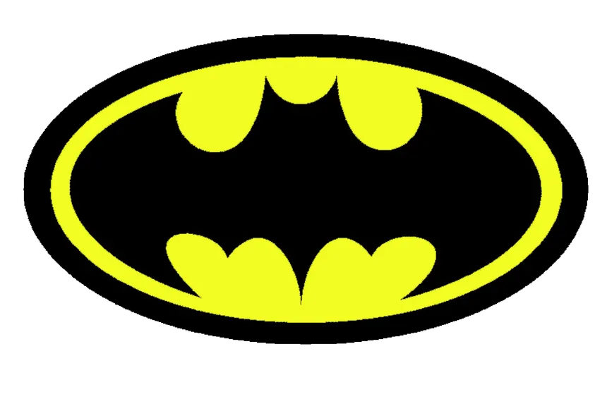
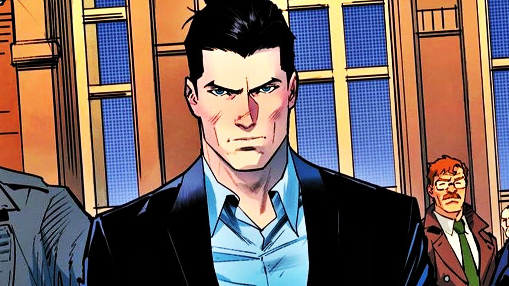
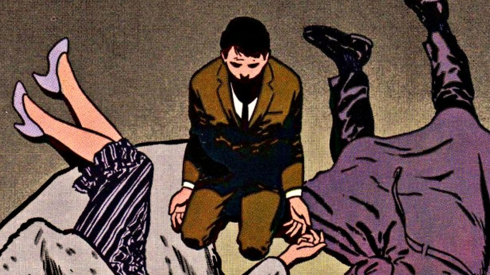
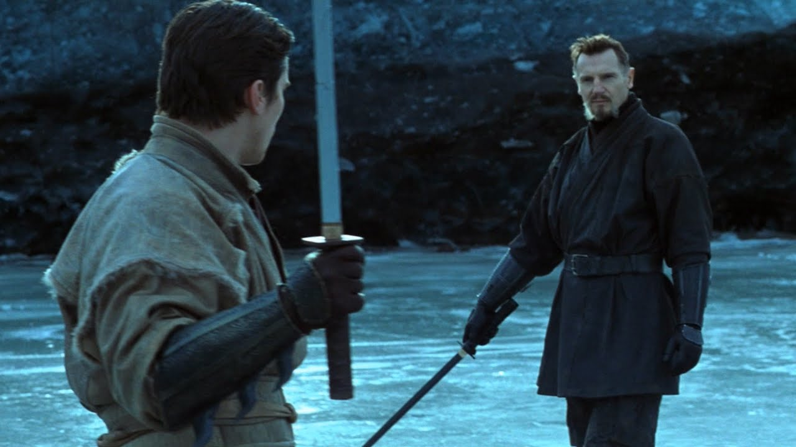
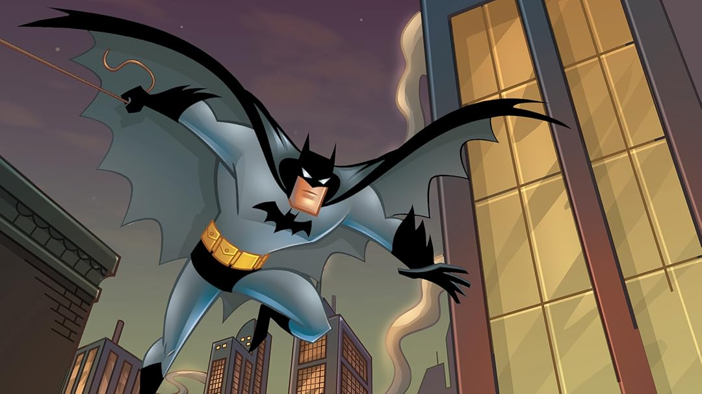

Batman é um super-herói que aparece nas histórias em quadrinhos americanas publicadas pela DC Comics. Batman foi criado pelo escritor Bill Finger e pelo desenhista Bob Kane, estreando no 27.º número da revista Detective Comics, em 30 de março de 1939.
Gotham City é uma cidade fictícia criada para as histórias em quadrinhos, filmes e animações do Cavaleiro das Trevas geralmente contra seus vilões. Ela representa um cenário caótico, perigoso, assutador, escuro, abandonado e barulhento dominado pelo crime, marginalização e corrupção, onde o Batman é tratado como a última esperança da cidade.
É a identidade pública do Batman repesentado como um bilhonário americano, magnata dos negócios, filantropo e dono das Empresas Wayne. Enquanto o mundo o enxerga como um playboy irresponsável e festeiro, essa fachada serve para proteger suas atividades noturnas como o Cavaleiro das Trevas. Bruce não possui superpoderes. Em vez disso, alcançou o ápice do condicionamento físico e mental humano através de anos de treino rigoroso em artes marciais, ciência, tática e investigação. Seu leal mordomo Alfred Pennyworth (que o criou após a morte dos pais), o Comissário James Gordon e seus parceiros de combate ao crime, como o Robin são seus principais aliados.

Bruce Wayne era um garoto rico de 8 anos em Gotham City. Ele viu seus pais, Thomas e Martha Wayne, serem assassinados a tiros por um criminoso (mais tarde identificado como Joe Chill) após saírem de um cinema. Depois do ocorrido, Bruce jurou vingar a família e declarar guerra contra todo o crime de Gotham, ele passou anos viajando pelo mundo, estudando ciências, criminologia, artes marciais e técnicas de infiltração. Ao retornar a Gotham, Bruce precisava de um símbolo que amedrontasse os criminosos, ele se inspirou em um morcego que voou pela janela de sua Mansão. Ao contrário de outros heróis, Batman não tem superpoderes, ele usa sua inteligência brilhante, preparo físico máximo, artes marciais e tecnologia de ponta.
Os pais do Batman, Thomas e Martha Wayne, foram mortos a tiros por um assaltante chamado Joe Chill em um beco escuro de Gotham City.

O treino do Batman combina força máxima, resistência física e artes marciais para alcançar o condicionamento físico perfeito.

O código de não matar do Batman é a regra moral em que Bruce Wayne se recusa a tirar a vida de qualquer pessoa, incluindo seus piores inimigos, pois ele jurou nunca tirar uma vida para que outras pessoas não passem pela mesma dor que ele sentiu quando viu seus pais morrerem. Além disso, Bruce acredita que, se cruzar a linha e matar um criminoso, ele se tornará tão perverso quanto aqueles que combate. Isso também é influenciado pelo fato de que seu pai, Thomas Wayne era médico, onde ele via a vida como algo sagrado.
O Batman é um dos heróis mais famosos da DC Comics, conhecido por usar o medo como arma e combater o crime em Gotham City.
